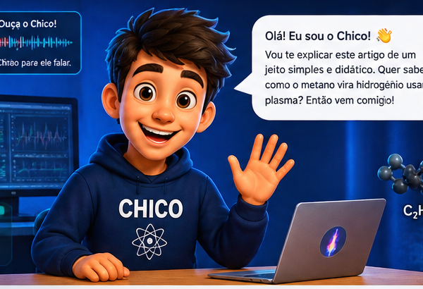

Sobre o artigo
Este artigo apresenta uma extensão de um modelo de equilíbrio originalmente desenvolvido para a análise da pirólise de metano em plasma de vapor. A abordagem incorpora intermediários químicos, avaliação da produção de hidrogênio e carbono, cálculo da demanda energética específica e uma análise técnico-econômica do processo.
Chico explica o artigo

👋 Olá! Eu sou o Chico!
Vou explicar o artigo de um jeito simples. A ideia principal é entender como podemos usar plasma e vapor para transformar metano em produtos de interesse, principalmente hidrogênio e carbono.
Visualização do artigo
Caso o visualizador de PDF não seja exibido no navegador, utilize o botão “Abrir artigo em PDF” ou “Baixar artigo em PDF” acima.